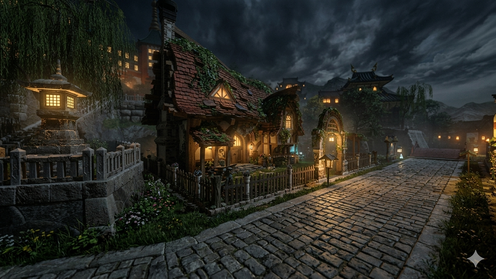
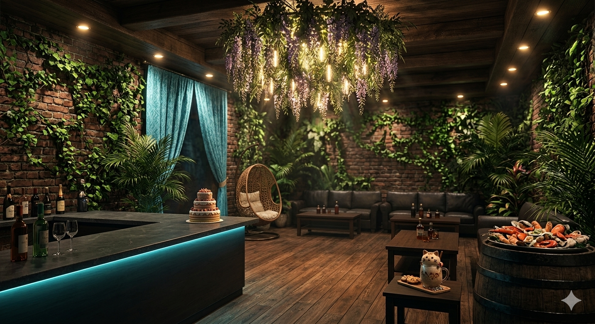
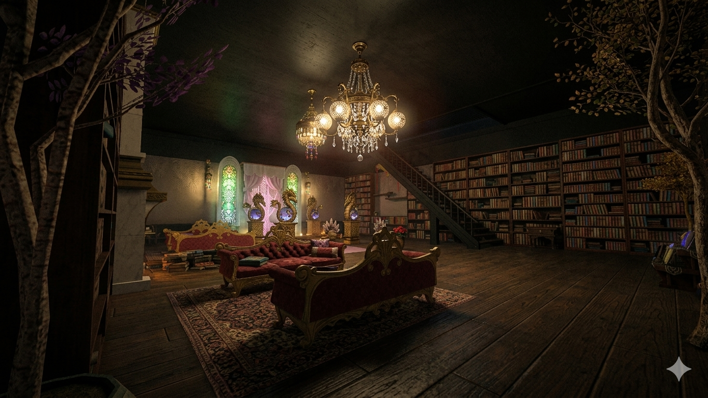
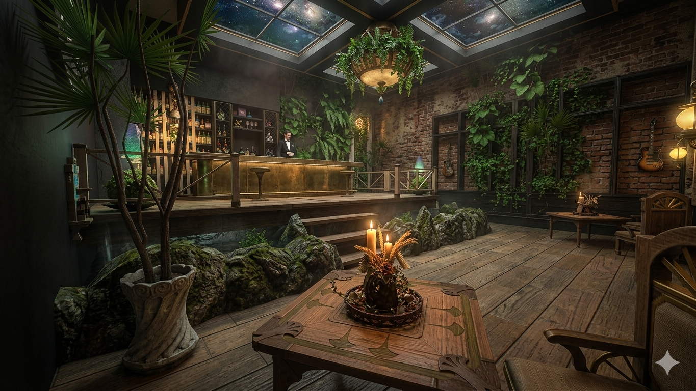
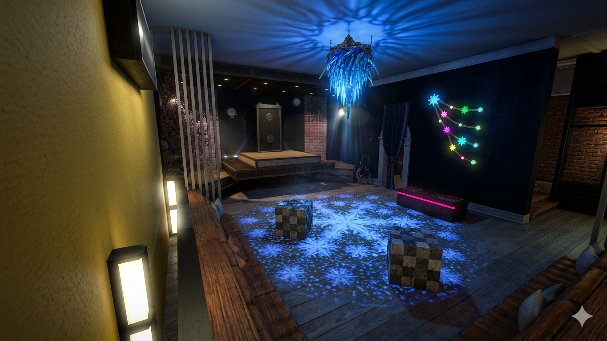

Le Beerbrow est notre Q.G. Nous disposons de toutes les infrastructures nécessaires.
La maison (pour l'instant) se situe à Shirogane parcelle 36, secteur 1.
A proximité immédiate, vous trouverez aussi un tableau des ventes, une sonnette ainsi que de très sympathiques voisins.
Notre Bar fusionne l'esthétique urbaine et la chaleur d'un cocon. Derrière une façade au style industriel affirmé — briques apparentes, structures en acier noir et béton ciré — se cache un refuge à l’ambiance résolument cosy.
Des canapés en cuir profond contrastent avec la rigueur des lignes métalliques, le tout adouci par des cascades de plantes vertes.
Un spot hybride et vivant, parfait pour un café en journée, cocktail signature en soirée ou se pochtronner en chantant "Les Lacs du Connemara" en fin de nuit


Faute de chateau, notre reine a sa place au Beerbrow.
Vous y trouverez l'allée avec plein de statues, que l'on appelle communemement "l'allée avec plein de statues"... Sans oublier le petit geranium.
Pour celles et ceux desireux de plus de tranquilité, la Chambre dispose elle aussi de tables et fauteuils confortables pour siroter votre Champagne Rosé dans une ambiance tamisée en vous imaginant Comte ou Duchesse.
Ce lieu secret se mérite. Passé la porte, le tumulte de la ville s'efface instantanément pour laisser place à une atmosphère feutrée et exclusive, hors du temps.
À l'intérieur, le cadre mêle élégance et confort. Entre fauteuils en velours capitonnés, lumières tamisées et boiseries sombres, ce cocon intimiste au design soigné invite immédiatement à la confidence et à la détente.
Au comptoir, des mixologues passionnés créent des cocktails sur mesure à partir de spiritueux rares. Chaque verre est une œuvre d'art à savourer lentement, faisant de ce havre de paix l'adresse idéale pour une coupure chic et déconnectée.


Dans le sous-sol du bar "Le Sourcil" vous trouverez un lieu intrigant:
Sous les projecteurs d’une scène intimiste, l’énergie est électrique. Artistes d'un soir et habitués se succèdent au micro dans une ambiance bienveillante et survoltée. Entre trac palpable et éclats de génie, le public retient son souffle, prêt à s'enflammer pour une punchline, une note de guitare ou une confidence partagée.
Ici, pas de filet : la spontanéité est reine. Humour, poésie, rap ou chanson acoustique se mélangent dans un joyeux chaos créatif où chaque performance d'une poignée de minutes est unique. C'est le rendez-vous brut et sans artifice des passionnés de spectacle, où l'on vient découvrir les talents de demain autour d'un verre.